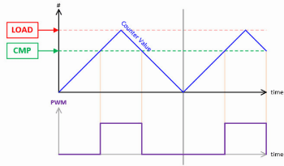

PWM — Modulación por Ancho de Pulso
1) Introducción
La Modulación por Ancho de Pulso (PWM) es una técnica digital que permite controlar la potencia promedio aplicada a una carga alternando rápidamente entre ON y OFF.
Ajustando la relación cíclica (duty cycle) se logra un efecto análogo a variar la tensión.

Aplicaciones: control de brillo en LEDs, motores DC (puente H), servos RC, generación de tonos (buzzer), conversión DAC con filtro RC, etc.
2) Conceptos Fundamentales del PWM
Valor Promedio y RMS
Una señal PWM de amplitud \( V_{high} \) y duty \( D \) tiene un valor promedio:
En cargas resistivas, el parámetro relevante para la disipación de potencia es el valor RMS:
La potencia en una carga \( R \) se calcula como:
⚠️ Nota: La fórmula \( V_{avg} = D \cdot V_{cc} \) es válida cuando el nivel bajo = 0V y el nivel alto = \( V_{cc} \).
Rizado (Ripple)
El rizado (ripple) es la variación periódica alrededor del valor promedio debido a que la señal real conmuta ON/OFF.
En un filtro RC, la salida no es perfectamente plana: oscila un poco por cada ciclo PWM.
- Menos rizado ⇢ mayor frecuencia PWM o filtros con constante de tiempo mayor que el período de conmutación.
- Más rizado ⇢ frecuencia baja o carga sensible.

Cómo elegir la frecuencia
- LEDs: ≥ 1 kHz para el ojo humano, 10–20 kHz si se usan cámaras para evitar banding.
- Motores DC: 15–25 kHz para salir del rango audible humano.
- Servos RC: 50 Hz con pulsos de 1–2 ms (protocolo especial).
- DAC por PWM: mientras más alta \( f_{PWM} \) frente al filtro, menor rizado.
3) Parámetros prácticos
TOP y Resolución
- TOP: valor máximo que alcanza el contador antes de reiniciarse.
- Define la resolución del PWM:
O de forma más intuitiva:
- Ejemplo: TOP=255 → 8 bits, TOP=1023 → 10 bits, TOP=4095 → 12 bits.
Relación Duty vs Level
El duty cycle se obtiene de la comparación entre el contador y el registro CC (level):
Armónicos
Un armónico es un componente de frecuencia que aparece en una señal periódica y cuya frecuencia es un múltiplo entero de la fundamental.
- Fundamental: f1 (ej. 2 kHz).
- Armónicos: 2f1 (4 kHz), 3f1 (6 kHz), etc.
Efectos de los armónicos:
- Ruido audible: si un armónico cae en 20 Hz–20 kHz, se percibe como zumbido.
- Interferencia electromagnética (EMI): armónicos altos se irradian en cables/pistas.
- Calentamiento adicional: excitación de transistores y bobinas a altas frecuencias.
- Distorsión visual: en LEDs/pantallas, los armónicos pueden generar parpadeo o banding en cámaras.
Alineación de bordes:
- Edge-aligned: refuerza armónicos pares → más ruido EMI.
- Center-aligned: cancela armónicos pares → menos ruido audible/EMI.


4) Arquitectura del PWM en microcontroladores
flowchart TD
A[Clock del sistema] --> B[Divisor de reloj]
B --> C[Contador 0..TOP]
C -->|Comparación| D[Registro CC Duty A/B]
D --> E[Conmutador de salida]
E --> F[GPIO en función PWM]
C --> G[Evento de Wrap TOP]
G --> H[IRQ opcional]- Clock del sistema (A): define la base temporal del PWM.
- Divisor de reloj (B): ajusta el rango de frecuencias útiles.
- Contador 0..TOP (C): corazón del PWM, define la resolución.
- Comparación (C→D): si contador < CC ⇒ salida HIGH; si ≥ CC ⇒ LOW.
- Conmutador de salida (E): puede incluir polaridad normal/invertida y estado inactivo (LOW, HIGH, Hi-Z).
- GPIO en modo PWM (F): el pin físico emite la señal PWM.
- Evento de Wrap (C→G): útil para sincronizar procesos.
- IRQ opcional (H): permite ejecutar código en cada ciclo PWM.
5) PWM en Raspberry Pi Pico 2
- Slices: 8 bloques PWM con 2 canales (A y B) ⇒ 16 salidas.
- TOP ajustable: hasta 16 bits.
- Divisor de reloj: entero/fraccional.
Relación frecuencia–divisor–TOP
donde:
- \( f_{clk} \) = frecuencia de reloj del sistema (125 MHz en Pico).
- \( div \) = divisor (1–255, fraccional).
- \( TOP \) = valor de recuento máximo.
Funciones útiles (SDK)
| API | ¿Qué hace? | Notas |
|---|---|---|
gpio_set_function(pin, GPIO_FUNC_PWM) |
Pone el pin en modo PWM. | GPIO_FUNC_PWM conecta el pin al generador PWM interno. |
pwm_gpio_to_slice_num(pin) |
Obtiene el slice asociado. | Cada slice maneja 2 canales. |
pwm_gpio_to_channel(pin) |
Retorna A o B. | Necesario para fijar duty. |
pwm_set_wrap(slice, top) |
Define TOP. |
Determina resolución. |
pwm_set_clkdiv(slice, div) |
Define divisor. | Ajusta frecuencia. |
pwm_set_chan_level(slice, chan, level) |
Ajusta duty. | Relación con duty: \( \frac{level}{TOP+1} \). |
pwm_set_enabled(slice, bool) |
Activa/desactiva slice. | Inicia PWM. |
Ejemplo en C (SDK)
// pwm_led.c — Atenuar LED con PWM en GPIO 2
#include "pico/stdlib.h"
#include "hardware/pwm.h"
#define LED_PIN 2
#define F_PWM_HZ 2000 // 2 kHz: fuera del rango visible
#define TOP 1023 // 10 bits de resolución
int main() {
stdio_init_all();
gpio_set_function(LED_PIN, GPIO_FUNC_PWM);
uint slice = pwm_gpio_to_slice_num(LED_PIN);
uint chan = pwm_gpio_to_channel(LED_PIN);
// Calcular divisor
float f_clk = 125000000.0f; // 125 MHz
float div = f_clk / (F_PWM_HZ * (TOP + 1));
pwm_set_clkdiv(slice, div);
pwm_set_wrap(slice, TOP);
pwm_set_chan_level(slice, chan, 0);
pwm_set_enabled(slice, true);
// Fade
int level = 0, step = 8, dir = +step;
while (true) {
pwm_set_chan_level(slice, chan, level);
sleep_ms(5);
level += dir;
if (level >= TOP || level <= 0) dir = -dir;
}
}